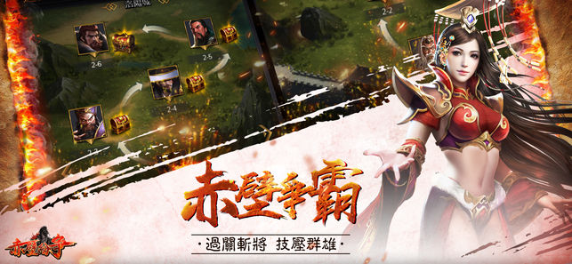

赤壁紛爭
三國策略卡牌手遊
◆出色的美術效果，經典歷史戰鬥背景 專業的美術團隊傾心為廣大玩家打造了逼真的三國主城場景，200多個獨具特色的武將技能，200多種不同品質的裝備，主線副本以地圖形式展現，每個章節都有著各自的時代背景，高度重現三國歷史!
◆還原歷史，再現熱血 諸葛亮、劉備、張飛、關羽、呂布等武將全新再現，人物形象纖毫畢現，技能特效別具一格，讓你爽快征服時代，打造屬於自己的歷史！
◆簡化操作，流暢戰鬥 遊戲採用RPG+掛機玩法模式，兼具RPG遊戲的帶入感及成長樂趣，又通過掛機玩法免除了肝帝們的苦惱，一覺睡醒，指尖收穫，爽快十足！
◆單指玩轉秀操作，一指超神肆虐全場 ——全面突破傳統搖杆，自由滑動，血戰群英，逐鹿中原，戰天下群雄，PVP王者之戰，憑藉實力肆虐全場，攻防輔助全力搭配，暢爽遊戲競技樂趣！
◆神將降臨齊上陣，特效全開暢爽淋漓 ——跨服戰、過關斬將、競技場等多種PVE、PVP遊戲模式，更有絕世佳人小喬貂蟬垂膝相伴，單指玩轉動感美人，神將降臨，橫掃千軍決戰千裏，讓您欲罷不能。